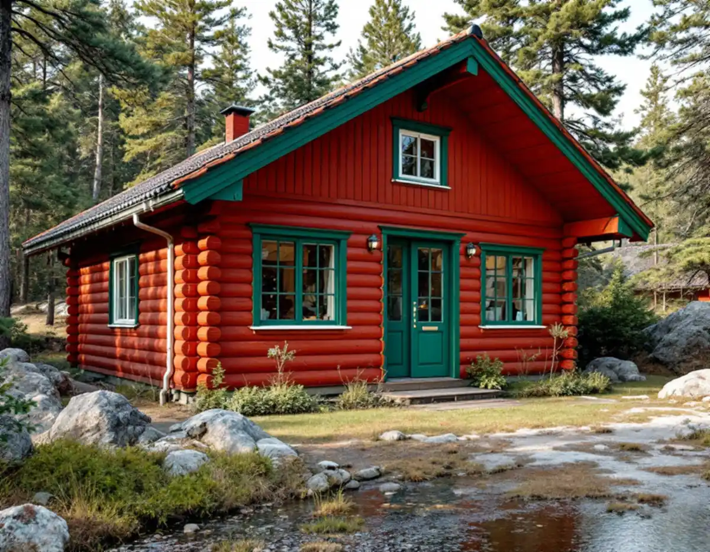
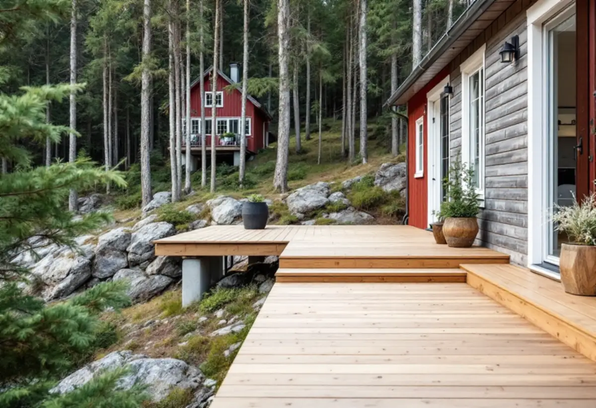

Husets historia
Vi tar reda på vilka delar som är ursprungliga och vilka som är senare tillbyggnader, gärna med hjälp av gamla ritningar.

I Tyresö är det vanligaste snickeriuppdraget ett hus som började som sommarstuga och nu ska fungera året runt.
Beskriv jobbet kort.
Något blev fel. Kontrollera uppgifterna eller ring 08 12 410 276.
Vi tittar på jobbet på plats innan du får offert.
Du ser vad som ingår och vad det kostar.
Vi drar av ROT direkt och sköter ansökan.
Geal Entreprenad AB, Bromma. Org.nr 559303-7566.

Det kan gälla panel och fönster, en ny förstukvist, en altan mot skogen eller en tillbyggnad – och då behöver både husets historia och kommunens lovregler vägas in.
På 1600-talet sträckte sig Tyresögodset från dagens Bollmora till Dalarö. När godsägaren Claes Lagergren dog 1930 började marken styckas, och i slutet av 1950-talet var nästan halva godset bebyggt med fritidshus, enligt ett kulturmiljöunderlag från Stockholms läns museum. Solberga fick byggnadsplan 1952 och Raksta 1958.
Underlaget beskriver ett välbevarat fritidshus från 1950-talet med röd stockpanel, gröna lister och foder och tvåkupigt tegeltak. Men samma underlag konstaterar att permanentningen pågår och att en del hus är helt ombyggda eller nybyggda. Fler har bosatt sig permanent i området, och den nya detaljplanen ska ge större byggrätter.
För snickaren innebär det hus med flera lager: en ursprunglig stuga, en eller två tillbyggnader från olika årtionden och detaljer som bytts efter hand. Innan vi föreslår något tar vi reda på vilka delar som är original och vilka som är senare tillägg.
Ett gott exempel på varsam ombyggnad finns i samma underlag: huvudbyggnaden på Solberga gård renoverades för att få permanentstandard med de gamla detaljerna kvar. Stommen och panelen lagades i nödvändig omfattning, förstukvisten och entrédörren tillverkades nya, och inne kompletterades foder och lister med samma utseende som de befintliga. Det är samma arbetssätt vi föreslår på en 1950-talsstuga.
Konkret betyder det att rötskadad panel byts bit för bit mot ny i samma profil, att äldre fönsterbågar med sina beslag lagas och tätas när det går, och att nya fönster i en tillbyggnad väljs så att de inte bryter mot stugans. Är fönstren uttjänta kan du läsa mer om fönsterbyte.
Inne handlar det ofta om att göra en sommarplanlösning beboelig året runt: en vägg som flyttas för att ge plats åt ett badrum, en ny trappa till vinden eller förvaring där det förut stod en kamin. Berör ändringen något bärande krävs anmälan innan arbetet börjar.
Tomterna i Solberga och Raksta är i huvudsak stora, med husen inpassade i naturmark. En altan där byggs bäst på plintar som följer berget, med luft under trallen så att virket torkar efter regn under tallarna. Kulturmiljöunderlaget visar också att verandor har byggts till i efterhand, som på huset Telegrafen där en veranda mot vattnet tillkom 1994 med vitmålade utsågade dekorationer.
Tyresö kommun skriver att en altan får byggas utan bygglov upp till 1,8 meter över marken inom 3,6 meter från huset och upp till 1,2 meter längre ut. Får altanen tak blir den en tillbyggnad, och för ett en- eller tvåbostadshus krävs lov när tillbyggnaderna sammanlagt blir större än 30 kvadratmeter. Då räknas tidigare skärmtak och attefallstillbyggnader in. Läs mer om tillbyggnad.
På sidan om förändringarna i plan- och bygglagen skriver kommunen att ommålning, nytt tak och nya fönster inte kräver bygglov på ett en- eller tvåbostadshus. Undantaget är fastigheter i ett kulturhistoriskt särskilt värdefullt område och byggnader som själva är det – där krävs lov, även för altan, plank och mur. Sådana områden kan vara utpekade i översiktsplanen, i kulturmiljöprogrammet eller i detaljplanen, och kommunen ber dig höra av dig om du är osäker.
Tyresö slott och kyrka med omgivande område är riksintresse för kulturmiljövården, och enligt underlaget ingår en del av planområdet Solberga/Raksta i riksintresset. Där kontrollerar vi planen extra noga innan något byggs utvändigt.
Lovfritt betyder inte att kommunen granskar arbetet i förväg. Ansvaret för att reglerna följs ligger på dig som fastighetsägare, och den som vill ha ett säkert besked kan söka ett frivilligt bygglov.
Friggebod och attefallshus heter numera komplementbyggnad och komplementbostadshus. Inom detaljplan krävs lov om byggnaden blir större än 30 kvadratmeter eller högre än 4 meter till nock, och sammanlagt får de lovfria byggnaderna på tomten vara högst 45 kvadratmeter. Ska byggnaden få vatten och avlopp eller en eldstad krävs anmälan och startbesked, enligt kommunen.
Vi bygger stomme, panel, fönster och inredning och samordnar installationerna. Mer om sådana hus finns på sidan om attefallshus.
Vi tar reda på vilka delar som är ursprungliga och vilka som är senare tillbyggnader, gärna med hjälp av gamla ritningar.
Vi kontrollerar om fastigheten ligger i ett omvandlingsområde eller ett kulturhistoriskt värdefullt område.
Panel, syllar, fönster och bjälklag undersöks för fukt och röta, särskilt där olika husdelar möts.
Du får ett skriftligt förslag där vi skiljer på vad som bör lagas och vad som lönar sig att byta.
Material och avfall planeras efter berg, träd och smala vägar.
Arbetet görs i etapper, och vi går igenom resultatet med dig på plats.
Rotavdraget gäller både permanentbostad och fritidshus som du äger och använder. Det är 30 procent av arbetskostnaden, högst 50 000 kr per person och år, och rot och rut får tillsammans vara högst 75 000 kr. Vi drar av beloppet direkt på fakturan.
Enligt Skatteverket ger en tillbyggnad av bostadshuset rätt till avdrag, även ett förråd eller en gäststuga som byggs ihop med huset. Detsamma gäller en altan som byggs ihop med huset. Att bygga en ny fristående byggnad, till exempel en friggebod eller ett garage, ger däremot inget avdrag.
Kostnaden beror mest på hur mycket röta som finns i panel och syllar, hur många husdelar och anslutningar huset har efter tidigare tillbyggnader, om detaljer måste specialtillverkas och hur lätt tomten är att arbeta på. Platsbesöket är kostnadsfritt, och du får ett skriftligt kostnadsförslag.
Altan, väggar, dörrar och inredning.
Snickare i Stockholm →Takbyte, takbesiktning och plåtarbeten.
Takläggare i Tyresö →Solberga, Raksta och Brevik.
Takrenovering i Tyresö →VA-anslutning, vattenmätare och dagvatten.
Attefallshus i Tyresö →LTA-avlopp, källarbadrum och golvbrunn.
Badrumsrenovering i Tyresö →Startbesked, utstakning och slutbesked.
Byggföretag i Tyresö →Fritidshus som blivit helårshus på Brevikshalvön.
Fasadmålning i Tyresö →Timmerhus, fritidshus och villor i Tyresö.
Fasadrenovering i Tyresö →Gamla bågar och beslag i Tyresö.
Fönsterbyte i Tyresö →Fritidshus som blivit permanentbostäder.
Fönsterrenovering i Tyresö →Fritidshus som byggts om till villor.
Golvläggare i Tyresö →Slipa och spara gamla brädgolv.
Golvslipning i Tyresö →Stugor som blir helårshus.
Köksrenovering i Tyresö →Stuprör, rännor och beslag i Tyresö.
Plåtslagare i Tyresö →Nytt tak med säker väg till skorstenen.
Takbyte i Tyresö →Ny tapet i rum med eldstad.
Tapetsering i Tyresö →Byggrätten i omvandlingsområdena.
Tillbyggnad i Tyresö →Rivningsavfallet, arkivet och eldstaden.
Totalrenovering i Tyresö →Eller ring 08 12 410 276, mån–fre 08–17.
Beskriv jobbet kort.
Något blev fel. Kontrollera uppgifterna eller ring 08 12 410 276.